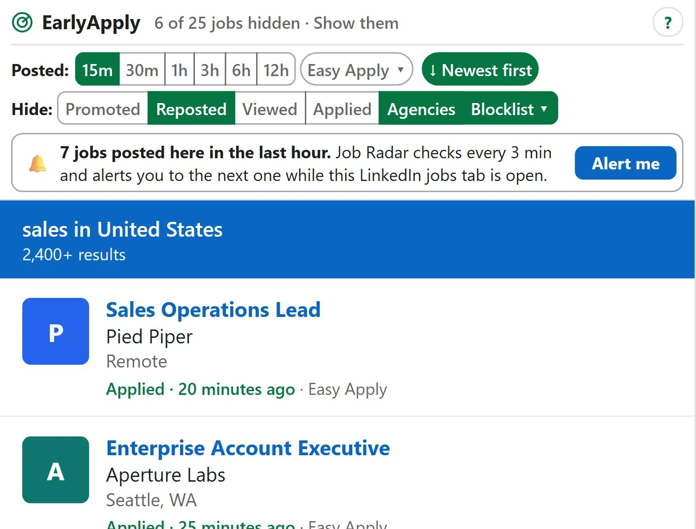
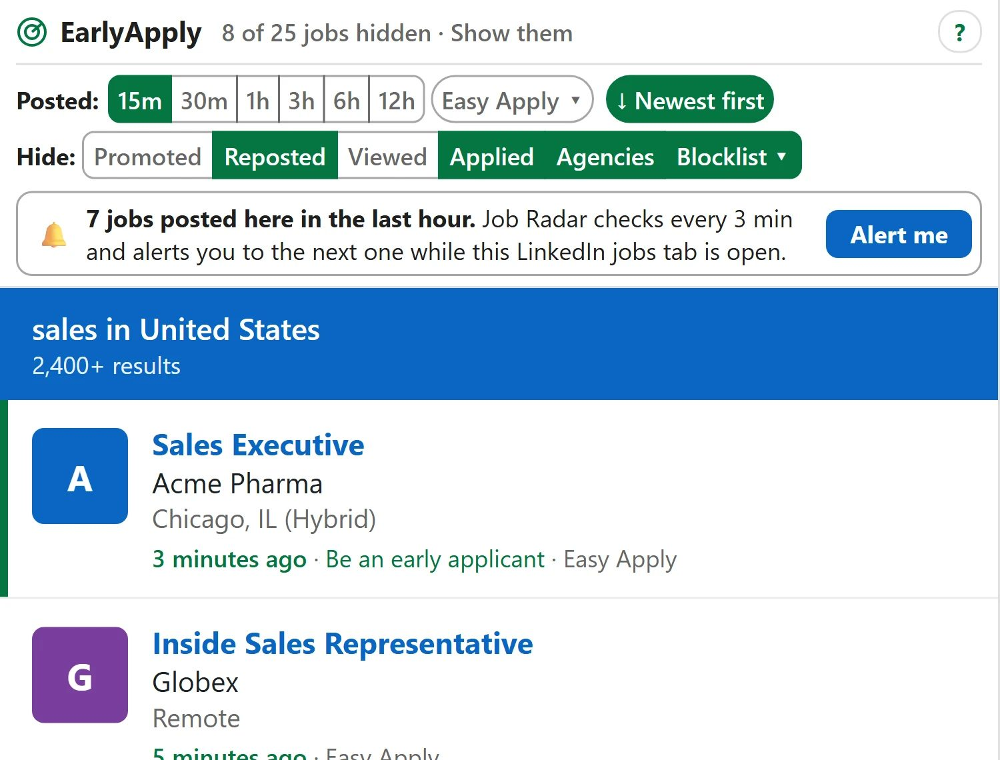
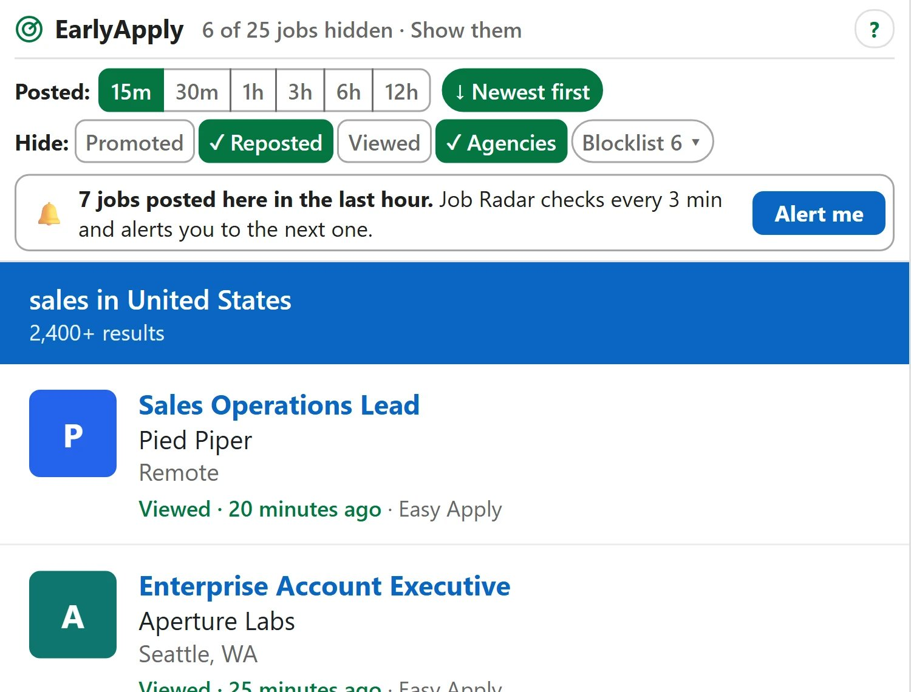
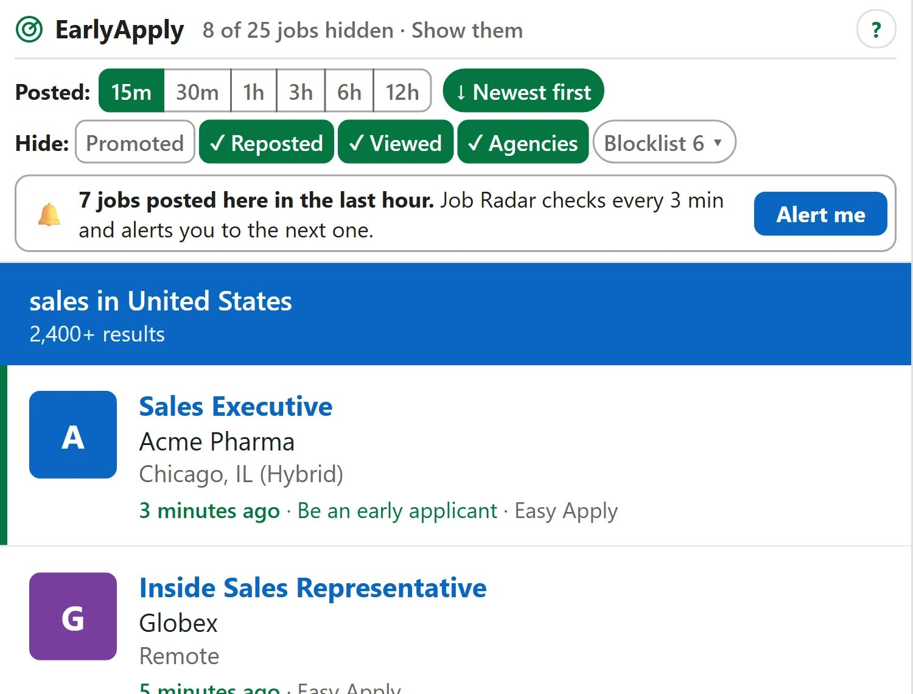

You apply to a job, then see the same job again in your next search, and again the day after. It wastes time and makes you doubt if you applied. Here is what LinkedIn really offers, tested in November 2026.
Can you hide applied jobs on LinkedIn?
Not with a setting. We checked the filter row (Date posted, Company, Easy Apply, Workplace type, Experience level, Employment type, Under 10 applicants, Verified) and the All filters panel. None of them hides jobs you applied to. The Easy Apply filter does not do it either: it only shows jobs that use LinkedIn's quick application.
Where to see your applied jobs
-
Open the Job tracker
Click Jobs at the top of LinkedIn, then Job tracker (or go to linkedin.com/jobs-tracker).
-
Click the Applied tab
You see the jobs you applied to through LinkedIn. Jobs you applied to on a company's own site are not always listed, so keep your own list for those.
Hide jobs you already applied to
LinkedIn writes Applied on the card of a job you applied to. LinkedIn has no setting to hide those cards. EarlyApply does:
-
Install EarlyApply and open LinkedIn Jobs
It is free, and the bar appears above the job list.
-
Click Applied in the Hide row
It is off by default. Cards that say Applied disappear from your list. A job you apply to right now stays on screen until you leave it, so the thank-you page does not vanish. Click show in the "hidden" line to peek at what was removed.


Demo screenshots with made-up jobs.
Limit: it only sees the Applied label that LinkedIn shows on the card. A job you applied to on a company's own site has no label, so it can still show.
Hide jobs you already viewed
LinkedIn marks a job card Viewed after you open it. Most jobs you apply to were opened first, so hiding viewed jobs also removes repeats. LinkedIn has no setting for this either. EarlyApply has a button for it:
-
Install EarlyApply and open LinkedIn Jobs
It is free, and the bar appears above the job list.
-
Find the Hide row
In the EarlyApply bar, look for Hide: with the chips Promoted, Reposted, Viewed, Applied and Agencies.
-
Click Viewed
It is off by default. Cards marked Viewed disappear from your list. The job you just clicked stays on screen until you leave it, so it does not vanish while you read it.


Demo screenshots with made-up jobs.
Limit: Viewed hides jobs you opened, not only jobs you applied to. For applied jobs, use the Applied button above. Both only see what LinkedIn marks on the card. Also see how to filter out reposted jobs, because a job you applied to can come back with a new date.
Ways to keep applied jobs out of your search
-
Dismiss the card with the X
Each job card in the search list has an X button. Use it on jobs you applied to or do not want to see.
-
Search only recent jobs
You usually apply to a job within a day or two of seeing it. If you only look at jobs from the last hour or the last 24 hours, most jobs you already applied to are not in the list. See how to see LinkedIn jobs posted in the last hour.
-
Look at the label on the card
LinkedIn can show a status such as Viewed on cards you opened, and may show Applied on jobs you applied to. Skip those cards, or let EarlyApply hide them for you.
-
Use alerts for new jobs only
An alert tells you about jobs that were just posted, so you are not scrolling through old ones. See how to get job alerts within minutes.
Good to know
- This can change. LinkedIn changes its search often. This page was tested in November 2026.
- Reposted jobs come back as new. A job you applied to can return with a new date. See how to filter out reposted jobs.
- Applied and Viewed are off by default. Switch them on in the Hide row. They hide cards only on your screen. Nothing is sent anywhere and nothing is changed on LinkedIn.
Spend your time on new jobs
EarlyApply is a free Chrome and Edge extension for LinkedIn Jobs.
- One-click filters for jobs posted in the last 15 minutes to 12 hours
- Job Radar: a desktop alert when a new job matches your search
- Hides promoted, reposted and staffing-agency jobs
Questions
Can you hide applied jobs on LinkedIn?
Not with a LinkedIn filter. In November 2026 the filter row and the All filters panel have no option to hide jobs you already applied to. The free EarlyApply extension adds an Applied button in its Hide row that hides them. You can also see them in the Job tracker and dismiss single cards with the X button.
Where can I see the jobs I applied to on LinkedIn?
Open Jobs, then Job tracker. The Applied tab lists every job you applied to through LinkedIn.
Does the Easy Apply filter hide applied jobs?
No. Easy Apply only shows jobs that use LinkedIn's quick application. It does not remove jobs you already applied to.
How do I hide viewed jobs on LinkedIn?
LinkedIn has no setting for it. In EarlyApply, click Viewed in the Hide row. Jobs marked Viewed are hidden.
Does EarlyApply hide applied jobs?
Yes. Click Applied in the Hide row (off by default) and every job card that LinkedIn marks Applied is hidden. It also has a Viewed button for jobs you already opened, plus buttons for promoted, reposted and agency jobs.